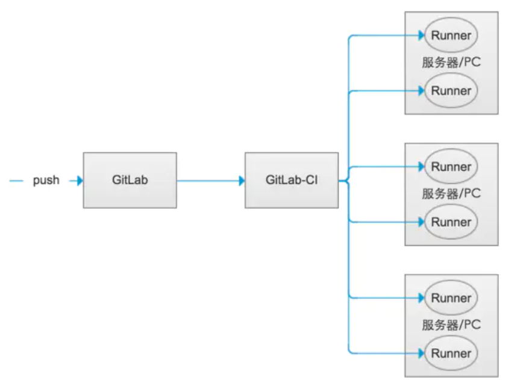

GitLab-从零打造自己的 CI/CD 系统
1 为什么要做 CI/CD（持续集成、持续交付、持续部署）
1.1 公司项目/产品开发-发布现状

- 开发人员开发阶段通过代码仓库实现多人协作开发。
- 开发完成后，开发人员在本机运行编译，等待编译打包。
- 打包完后通过远程桌面部署最新的包到测试环境。
- 通知测试人员进行测试验证。
- 测试人员反馈 BUG，开发人员修改后，重复 2.3.4。
- 测试通过，准备某个晚上半夜或者周末上线生产环境。
- 测试人员等待到半夜或者周末验证生产环境系统。
1.2 存在问题
1.2.1 工作效率低
重复性工作较多，编译打包的过程浪费开发资源，每次测试部署正常 10 到 20 分钟。
1.2.2 容易出现低级错误
产品/项目成果交付全部采用手工操作，打包编译过程中各种莫名其妙问题。
1.2.3 不能尽早的发现问题，要花费更大的代价修复
项目经理及需求人员不清楚项目进展，不能提前把空风险；开发团队成员间不能及时发现合并代码后的问题。
1.2.4 功能开发完后，发现不是客户想要的效果
一般都是等项目整体功能开发完成后给客户看，客户不能尽早看到成果，最后发现不是想要的效果。
1.2.5 测试深度不够，上线项目问题较多
测试人员测试基本属于功能性测试，上线后往往发现一些未测试到的功能及问题。
1.2.6 测试成本较高
需要投入大量的测试人员进行测试
存在以上这些问题，我们应该要怎么做呢？
1.3 CI/CD（持续集成、持续交付、持续部署）
要解决以上问题，可以通过软件开发的持续方法来解决。
软件开发的持续方法是基于自动执行脚本，以最大程度地减少在开发时引入错误的机会。从开发新代码到部署新代码，几乎不需要人工干预，甚至根本不需要干预。
它涉及到在每次小的迭代中就不断地构建，测试和部署代码更改，从而减少了基于错误或失败的先前版本开发新版本代码的机会。
使用软件开发的持续方法能够实现快速迭代，保持高质量，避免不必要的成本投入。
1.3.1 持续集成 CI（Continuous integration）
通过持续合并团队开发人员代码并进行自动化构建及测试来确保没有集成问题并及早发现任何问题的一种做法。
投入：
- 需要为每个新功能，改进或错误修复编写自动化测试。（单元测试、集成测试等）
- 需要一个持续集成服务器（jenkins、GitLab CI），该服务器可以监视代码仓库并针对推送的每个新提交自动运行测试。
- 尽可能多地提交代码，合并更改。
产出：
- 减少 BUG，因为通过自动化测试可以获取测试结果，避免将一些问题提交到交付生产中。
- 编译部署产品更顺利，因为集成时问题都已解决。
- 开发者可以无缝工作，不需要间断的来解决问题，因为开发者可以很快获得构建失败的结果，在开始下一个任务之前就可以很快解决。
- 测试成本降低，因为集成服务器可以一秒运行几百个测试用例。
- 测试团队花更少的时间测试，可以重点关注测试上的改进。
1.3.2 持续交付 CD（Continuous Delivery）
在持续集成的基础上，进行验收测试（QA）,通过验收测试后发布到预发布环境中，预发布环境到生产环境的发布，需要通过手动点击触发自动部署。也就是所有的变更都可以被部署到生产环境中，但是不会自动触发部署。
投入：
- 要有持续集成的基础，测试用例需要覆盖足够的代码。
- 部署需要自动化，只是触发部署是手动的。
- 团队需要增加新功能标识，避免未完成的新功能进入待发布的产品。
产出：
- 部署软件变得非常简单。团队不需要提前几天准备发布。
- 可以提高发布频率，用户可以尽早接触到新功能。
- 每次都是小的更改，对决策的压力要小得多，可以更快地迭代。
1.3.3 持续部署 CD（Continuous Deployment）
在持续集成的基础上，进行验收测试（QA）,通过验收测试后发布到预发布环境中，预发布环境到生产环境的发布自动完成。持续部署可以加速用户反馈新功能，避免发布日带来的压力。开发可以着力于开发系统，开发结束后几分钟就可以触达到用户。
投入：
- 测试必须要做到足够。测试的质量将决定发布的质量。
- 文档建设需要和产品部署保持同步。
- 新功能的发布需要协调其他部门，包括售后支持&市场&推广等。
产出：
- 快速的发布节奏，因为每个新功能一旦完成都会自动的发布给用户。
- 发布风险降低，修复问题更容易，因为每次变更都是小步迭代发布。
- 用户可以看到持续性的优化和质量提升，而不是非要等到按月，按季度，甚至按年。
1.3.4 它们之间的关系
持续集成是持续交付和持续部署的一部分。持续部署和持续交付区别在于持续部署是自动执行发布，持续交付需要手动点击触发自动发布。

2 GitLab
2.1 GitLab CI/CD
GitLab CI / CD 是 GitLab 内置的工具，可以将所有软件开发的持续方法（持续集成、持续交付、持续部署）应用于软件，而无需第三方应用程序。（使用过 Jenkins 的，可以理解为他跟 Jenkins 一样的功能，只是它是 GitLab 自带的，使用起来更简单）
2.2 GitLab-Runner
GitLab Runner 用于运行项目持续集成、持续部署脚本并将结果发送回 GitLab，与 GitLab CI/CD 一起使用。
2.3 GitLab、GitLab CI 、GitLab-Runner 关系
开发推送代码到 GitLab，GitLab 检测项目中是否存在 .gitlab-ci.yml 配置，通过该配置找到指定的 GitLab-Runner，runner 执行提前配置好的脚本，进行编译、 集成、测试、交付、部署，一切顺利地话会分发到各个服务器（测试服务器、预发布服务器、正式服务器等），此时一个迭代开发上线流程走完。

2.4 .gitlab-ci.yml
项目根目录下的一个文件，记录了一系列的阶段和执行规则。GitLab-CI 在检测到代码 push 后会解析它，根据里面的内容调用该项目可访问的 Runner 来运行。
2.4.1 YAML 常用语法说明
- 通过类似大纲的缩进方式组织层级（空格，不能使用跳格字符(TAB)）
1 | job1: |
- “# “号注释，而且只能是一行的注释，也就是单行注释
1 | job1: # 这是一个注释 |
- 短杠+空格+内容表示数组的一项，以下例子中代表 stages 里边有三项，转换为 JSON 来理解的话是{“stages”:[“build”,”test”,”deploy”]}
1 | stages: |
- 对象使用冒号+空格（ : ）分开键值和内容，以下例子中代表 variables 里边有三项，转换为 JSON 来理解的话是{“variables”:{“deployServer”:”weihu@192.168.0.183“,”deployDirectory”:”……”,”deployWebUrl”:”…….”}}
1 | variables: |
- 字符串可以不加引号
1 | variables: |
了解更多：https://zh.wikipedia.org/wiki/YAML
2.4.2 相关概念

Pipeline（流水线）：每次推送到 GitLab 的代码会根据项目 .gitlab-ci.yml 文件产生一个流水线，流水线就是一个分成不同阶段(stage)的作业(job)的集合。
Stage（阶段）：阶段是对批量的作业(job)的一个逻辑上的划分，每个 GitLab CI/CD 都必须包含至少一个 Stage。多个 Stage 默认是按照顺序执行的，默认情况下如果其中任何一个 Stage 失败，则后续的 Stage 不会被执行，整个 CI 过程被认为失败，当然这种默认行为也可以通过配置去修改它。
job（作业）：作业就是运行器(Runner)要执行的指令集合。当一个 Stage 执行的时候，与其关联的所有 Job 都会被执行。在有足够 Runner 的前提下,同一阶段的所有作业会并发执行。作业状态直接影响阶段的状态。
2.4.3 常用配置（点击关键词有惊喜）
| 关键词 | 描述 |
|---|---|
script |
在作业里边会被 runner 执行的脚本，脚本执行的目录为你项目的目录 |
after_script |
在作业运行后执行的脚本，可以全局定义，也可以在作业中定义 |
allow_failure |
允许一个作业失败后影响流水线的失败 |
artifacts |
翻译过来是制品的意思，会将流水线过程中的一些文件、文件夹打包生成一个外部可下载的链接，还用于在后续作业中传递缓存。有以下属性：1.paths 文件路径 2.exclude 要排除的文件 3.name 制品名称 4.expose_as 在 UI 页面导出名 5.untracked 布尔类型，是否将 git 忽略的文件加到制品中 6.when on_success；on_failure；always 何时上传制品 7.expire_in 过期时间默认 30 天 8.reports 收集测试报告 |
before_script |
在作业运行前执行的脚本，可以全局定义，也可以在作业中定义 |
cache |
缓存一些文件，用于后续任务使用。比如 node_modules、maven 下载的包这些缓存下来，可以大大优化流水线效率 |
coverage |
用于获取项目的代码覆盖率 |
dependencies |
提供要从哪些作业获取制品 |
environment |
作业部署到的环境 |
except |
限定什么条件下不创建作业 |
extends |
配置作业继承的一些配置条目 |
image |
指定 docker 镜像为基础运行环境 |
include |
引入外部的 YAML 文件 |
interruptible |
定义在新的运行使其冗余时是否可以取消该作业 |
only |
可以限定特定分支，特定 tag 等才执行作业 |
pages |
用于将静态内容上传到 GitLab |
parallel |
一个作业并行多少个实例 |
release |
用于创建一个 release |
resource_group |
限制作业并发执行 |
retry |
设置一个任务在某种情况下的重试次数 |
rules |
规定任务的执行规则，使用表达式来确定哪些作业执行哪些不执行等等 |
services |
使用 docker 服务镜像 |
stage |
翻译过来是阶段的意思，用于归类作业，按照阶段定义的顺序来执行 |
tags |
指定该项目可访问范围内用于执行任务的 runner，跟注册 runner 时的 tag 对应 |
timeout |
设置一个任务的超时时间 |
trigger |
一个项目的流水线触发另一个项目的流水线执行 |
variables |
定义变量 |
when |
什么时候去运行这个作业. 比如: when:manual 手动执行一个作业、 when:delayed延迟执行作业 |
了解更多：https://docs.gitlab.com/ee/ci/yaml/README.html
配置示例：
1 | before_script: |
2.5 通知
通过设置通知您可以随时了解 GitLab 中发生了什么事情，比如可以设置通知获取 CI 构建结果。
2.5.1 编辑通知

编辑通知设置：
- 点击个人资料图片，然后选择设置 。
- 点击左侧边栏中的通知 。
- 编辑所需的通知设置。 编辑的设置将自动保存并启用。
这些通知设置仅适用于您。 它们不会影响同一项目或组中其他任何人收到的通知。
2.5.2 通知设置示例
需求：设置 xxx 项目只在构建失败后发送通知邮件。

3 快速上手
3.1 场景
实现产品拼夕夕（vue 的 PC 端站点）在开发人员提交一个小功能到代码仓库后自动部署到测试服务器上，产品经理可以及时看到产品开发情况,开发人员也能及时发现集成的问题。
3.2 环境准备
3.2.1 部署应用的测试服务器环境
- 这里使用一台 Windows server 2008 R2 Enterprise，服务器 IP 为 192.168.0.183，服务器用户名 weihu。
- 服务器 web 容器安装：这里使用 nginx,nginx 静态资源目录为默认的 D:\Product\test\nginx-1.18.0\html\，端口设置为 8104，在 html 目录下创建 pinxx 目录用于部署拼夕夕产品（服务器已有其他 web 容器也可以直接使用，比如 node 服务、tomcat 等）
- 安装服务器的 OpenSSH 并配置免密登录，参照以下文档配置：https://www.yuque.com/docs/share/d3254cc2-2f11-4080-8af1-4b267b6c8235?# 《Windows OpenSSH》
注：同一台服务器/ PC，只需要配置一次 OpenSSH，其他项目都可以基于此 SSH 进行远程配置。
3.2.2 GitLab-Runner 安装
- 这里使用一台 Windows server 2012 R2 Standard,服务器 IP 为 192.168.0.231，服务器用户名为 administrator。（也可以直接使用上边 183 的服务器进行安装，这里是为了演示通过 SSH 远程部署）
- 安装配置 GitLab-Runner，参照以下文档配置：https://www.yuque.com/docs/share/36b9f6ce-a9e2-47ff-ad4c-61a4b3f4256f?# 《GitLab-Runner 安装配置(windows)》
注：一台安装了 GitLab-Runner 的服务器/PC 可以供多个项目使用，具有相同打包需求的项目，可以使用已有的 GitLab-Runner。
3.3 项目配置
假设拼夕夕项目代码已经上传至代码仓库 GitLab，在“GitLab-Runner 安装”章节也已经为该项目注册了 tags 为“android、node、vue、ionic”的 GitLab-Runner。
- 添加 CI/CD 配置文件：登录 GitLab 打开拼夕夕项目详情页面，点击“Set up CI/CD”配置按钮，会打开新建 .gitlab-ci.yml 页面（也可以在自己本机项目根目录新建该文件）。

- 在打开的 .gitlab-ci.yml 文件中，编写以下内容：
1 | before_script: |
- 提交以上文件会自动触发流水线，可以切换到流水线页面查看流水线执行进度。